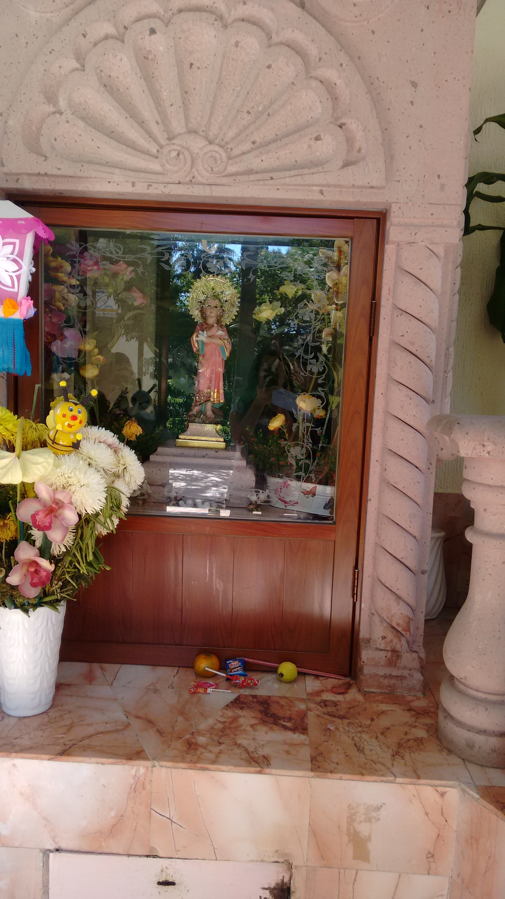

Pensamiento
La vida es un camino de notas, silencios y aprendizajes. Cada paso, cada caída y cada aplauso forman la melodía que hoy puedo compartir contigo.

Agradecimientos
Corazón bendecido con
Dios nuestro Señor y el Niñito Jesús de las Palomitas
Gracias por la vida, por la fuerza en los momentos difíciles y por permitirme expresar mi fe, mis emociones y mi verdad a través de la música.
Familia
Gracias por el amor incondicional, por creer en mí incluso cuando el camino parecía incierto, y por ser el refugio donde siempre encuentro paz.
Amigos
Gracias por caminar a mi lado, por las risas, los consejos y por acompañarme en cada etapa de esta historia musical.
Músicos
Gracias por compartir talento, escenario y corazón. Cada nota tocada juntos es parte viva de este proyecto.
Fans
Gracias por escuchar, sentir y hacer suyas mis canciones. Ustedes son la razón por la que la música sigue latiendo.
Este soy yo
Mi vida sin música es como un corazón sin sangre. Si no suena mi guitarra, mi alma llora en silencio. Iván Torres “El Chiki” es música que complementa la esencia del universo y vive en cuerpo, mente y espíritu.